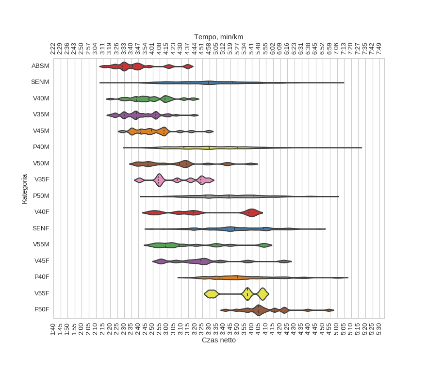

San Sebastian Marathon (2014)
Histogramy
kobiety

mężczyźni

wszyscy

Wykresy rybkowe
wg płci

| czas | count | |||||||
|---|---|---|---|---|---|---|---|---|
| mean | std | min | 25% | 50% | 75% | max | ||
| plec | ||||||||
| K | 3:48:34 | 0:26:39 | 2:39:47 | 3:31:40 | 3:48:46 | 4:06:09 | 5:02:51 | 245 |
| M | 3:30:49 | 0:28:07 | 2:15:55 | 3:10:41 | 3:29:42 | 3:49:21 | 5:11:50 | 2659 |
wg kategorii

| czas | count | |||||||
|---|---|---|---|---|---|---|---|---|
| mean | std | min | 25% | 50% | 75% | max | ||
| kat | ||||||||
| P40F | 3:54:21 | 0:23:37 | 3:12:22 | 3:37:17 | 3:50:07 | 4:07:14 | 5:02:51 | 94 |
| P40M | 3:31:54 | 0:26:44 | 2:34:29 | 3:11:56 | 3:29:42 | 3:49:31 | 5:11:50 | 1057 |
| P50M | 3:44:49 | 0:24:35 | 2:46:00 | 3:27:10 | 3:43:54 | 4:00:55 | 4:56:01 | 360 |
| SENF | 3:49:13 | 0:23:25 | 2:49:06 | 3:34:59 | 3:47:31 | 4:08:08 | 4:46:59 | 87 |
| SENM | 3:30:04 | 0:26:35 | 2:17:56 | 3:10:34 | 3:29:20 | 3:46:22 | 4:59:22 | 1097 |
Menu
HistogramyWykresy rybkowe
∙ wg płci
∙ wg kategorii
Liczba uczestników: 2904
Wygenerowano: 2016-03-25 20:34:00.559331